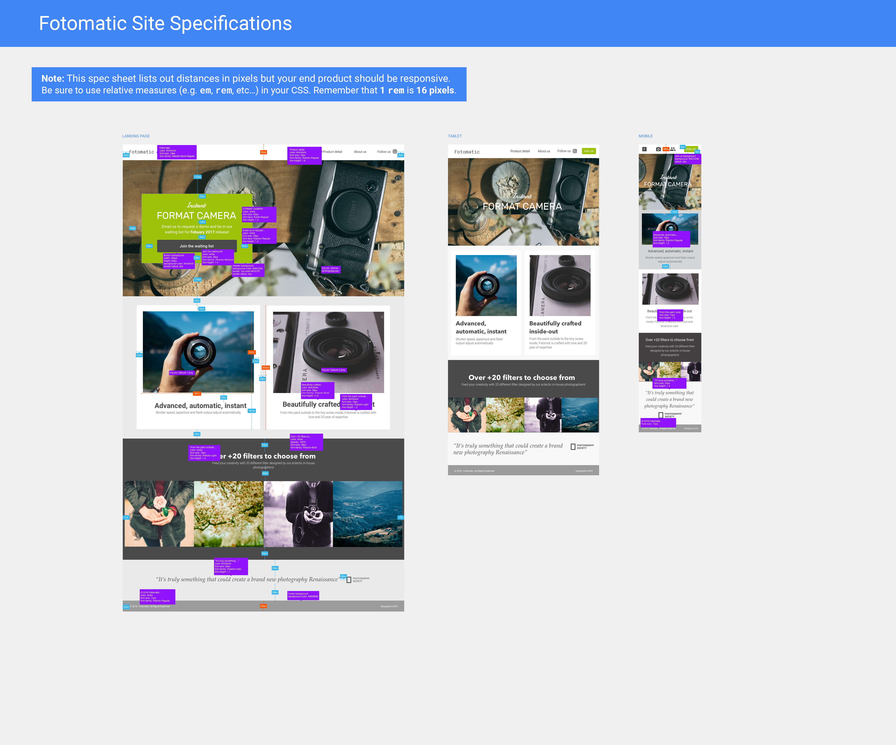

Fotomatic
This project involved fixing a broken version of a responsive website called Fotomatic. The original website had several issues including broken navigation, misaligned elements, and non-functional buttons. My task was to identify these problems and implement the necessary HTML and CSS changes to restore the website's functionality and appearance.
Method
Landing Page
Header
The firts step was to thoroughly review the existing codebase and the spec to identify all the issues present in the website and what needed to be fixed. Here you can see the spec that was given to me for the project to compare against the broken website.

After this I decided to start with the header. I noticed that there were bulletpoints in the nav, the site name was small, the position of the items were off and the rest of the website went over the header instead of under it.
The first thing I fixed was the z-index, the height, position of the header and the z-index of the main content. I worked out the height as the design spec said the height of the header was 85px, which you divide by 16px which gives you 5.3125rem. I also notices that the header wasn't to the top of the page so added in top: 0; to fix this.
header {
position: fixed;
top: 0;
z-indez: 5;
height: 5.3125rem;
}
.main-content{
z-index: 1;
}
Next I worked on the logo, I noticed that is was small and a different font to the spec and it was also underlined. So I increased the font size to 1.33rem and changed the color to #4A4A4A to match the spec.
header .logo {
color: #4A4A4A;
font-size: 1.5rem;
text-decoration: none;
font-style: "Roboto-Mono-Regular";
}
Another thing I fixed in the header was the padding, I noticed that the padding was all the way around thus affecting the align-items:centre so only put padding the sides to make it look neater.
align-items: center;
height: 100%;
padding-left: 1.875rem;
padding-right: 1.875rem;
Confident I had fixed all the issues in the header I moved on to the next section.
Sign Up Section
The next section I worked on was the sign up section. I noticed that the background image was not displaying correctly, the CTA box was misaligned and the text inside the box was not centered properly. To fix this I added the below code to the CSS.
#sign-up-section {
align-items: center;
background-image: url('../images/banner-landingpage.jpg');
background-repeat: no-repeat;
background-position: center;
background-size: cover;
}
#sign-up-cta {
margin-top: 10.265rem;
margin-bottom: 10.265rem;
margin-left: 6.25rem;
}
Next I looking at the padding inside the CTA box. I noticed that there was too much padding at the bottom so I increased it to 3
#sign-up-cta {
padding: 2rem 5rem 3.5rem 5rem;
}
Another thing I fixed in this section was the border radius of the CTA box. The spec said it should be 4px but I changed it to 0.25rem to keep the units consistent throughout the CSS.
#sign-up-cta {
border-radius: 0.25rem;
}
Finally I worked on the text inside the CTA box. I noticed that the h1 and h2 font sizes were incorrect and the spacing between them was too large. So I set the h1 to 3.125rem and the h2 to 2.25rem. I also set the font-weight to normal for both to match the spec. I also added margin to the top and bottom of the h1 to reduce the spacing.
#sign-up-cta h1 {
font-size: 3.125rem;
}
#sign-up-cta h2 {
font-size: 2.25rem;
}
#sign-up-cta .striking {
font-weight: normal;
margin-bottom: .75rem;
margin-top: .75rem;
}
#sign-up-cta .cursive {
font-weight: normal;
}
After making these changes I reviewed the section and was happy that it now matched the spec.
Features Section
Tablet
Mobile